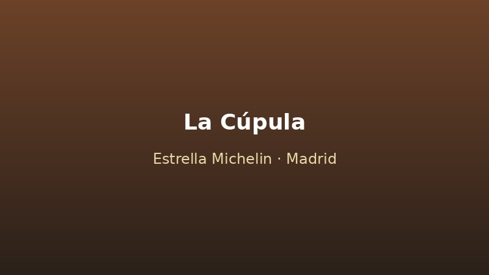
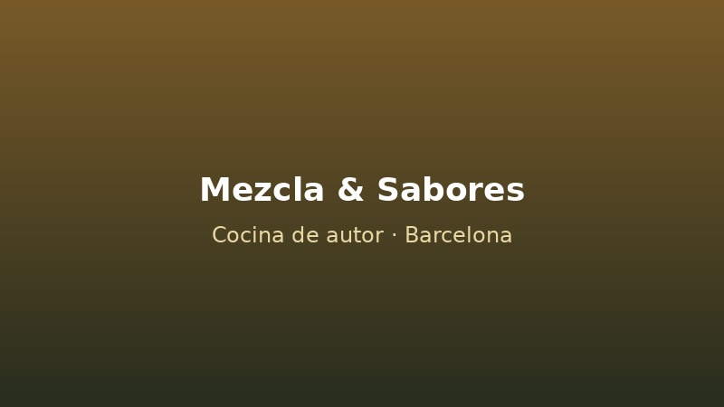
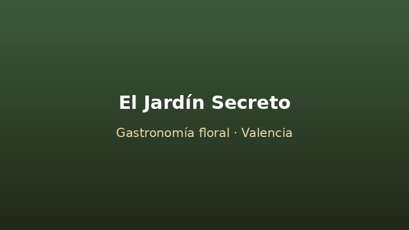

Gala Gourmet Anual
Decoración gastronómica completa para cena de gala con chefs invitados de todo el mundo.
Decoraciones Gastronómicas para Eventos
Bienvenidos a mi espacio. Soy Oliver Arteaga y me dedico a convertir cada comida en una experiencia visual inolvidable a través de la decoración gastronómica.

Soy un artista culinario con más de 15 años de experiencia transformando platos en auténticas obras de arte. Mi pasión por la gastronomía y el diseño me ha llevado a colaborar con chefs de renombre y a crear experiencias visuales únicas para bodas, galas y eventos corporativos. Cada creación es una fusión de técnica, color y sabor, diseñada para sorprender y deleitar.
Comienzo mi carrera en restaurantes con estrella Michelin, especializándome en presentación y emplatado artístico.
Diseñé la decoración culinaria completa de una gala benéfica con más de 300 invitados.
Participé en ferias gastronómicas internacionales presentando montajes escultóricos comestibles.
Recibí el premio "Arte en el Plato" por mi contribución a la decoración gastronómica.
Decoración gastronómica completa para cena de gala con chefs invitados de todo el mundo.
Demostración artística en vivo de esculturas comestibles y estaciones de postres decorativos.
Mesa dulce personalizada, torta escultural y detalles comestibles temáticos exclusivos.

Diseño de emplatados artísticos y decoración de menús degustación.

Montajes escultóricos comestibles y estaciones de show-cooking decorativo.

Decoración floral comestible y experiencias sensoriales de postres artísticos.